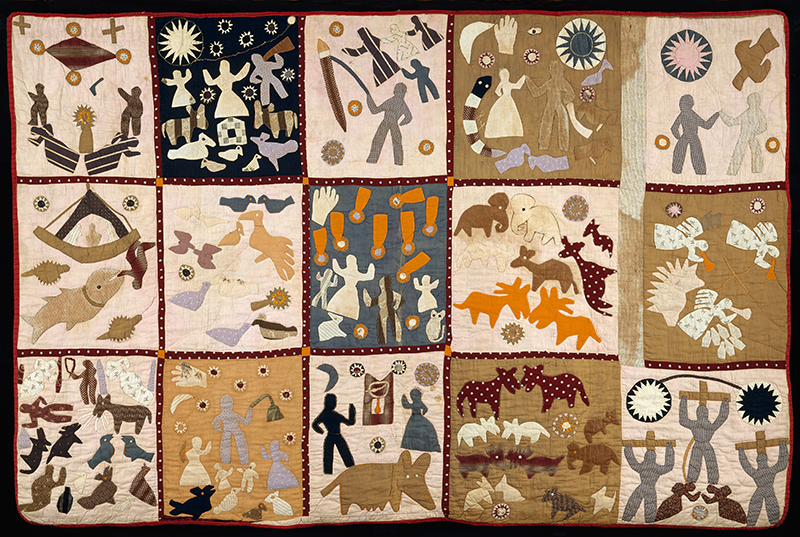
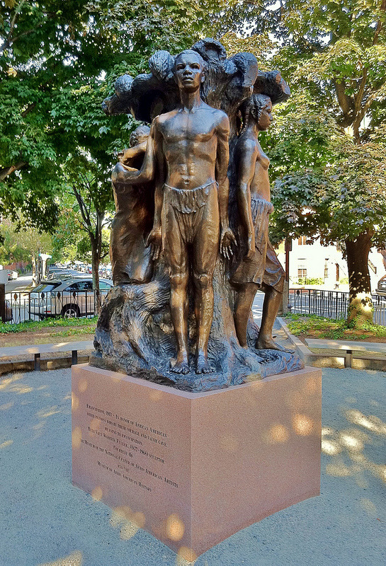
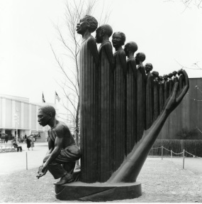

/>
African-American History, Through Art
African-American History, Through Art
Looking at the artwork, poetry, and music of African-Americans throughout
the 19th and 20th century, we can understand the pain, struggle, and
beauty of black history. Through the analysis and appreciation of the art
that was derived from their creative souls and through connecting that art
to historical events, the evolution of black culture and spirit is
revealed, as we witness generations of black Americans find new meanings
of freedom, equality, and strength.
The 19th Century
During the first half of the 19th century, the U.S. was divvying itself up
into free and slave states, with events such as the Missouri compromise
deciding the fates and freedoms of many African-Americans. During this
time, black people were highly oppressed. The outcome of State v Mann
rules that slave owners had complete control and authority of their
slaves’ bodies, meaning they could be subject to unimaginable amounts of
work and abuse. However John v. State rules that the killing of a white
person by a slave was murder. The inequality of human rights, the lack of
freedoms, and the outright abuse towards African-Americans led to many
uprisings, including Nat Turner’s Rebellion, but they were to be defeated
constantly. The Fugitive Slave Act entrapped slaved even more, with little
possibility of relief in northern cities. In the north, however, the
abolitionist movement was taking off, with figures such as Fredrick
Douglass and black newspapers such as the Liberator and The North Star
fueling the movement that was now stronger than ever. At this point,
northern and southern blacks had very different struggles and existences.
However it was still a time of survival and self-reliance for both. Riots
in northern cities made many African-Americans flee to Canada. Among those
who stayed, many united, meeting in church to worship, or at black
conventions to discuss the future of the black community in terms of
education, politics, and prosperity. For those who were enslaved, this was
a time for survival of the body and soul, through family, fictive kin,
religious awakening and both quiet and raging resistance.
Grave of A Slave discusses death in a very interesting way, viewing
death as a release instead of a cruel ending. As mentioned, the
American government legally allowed the life and body of a slave to
belong to their slave master. The torturous lives of many led slaves
to see beyond their physical existence on earth. The poem mentions
ideas such as safety, freedom, and rest—all rights that slaves did
not possess, however they could theoretically claim these rights
after death. Forten also refers to the grave as a place where “rich
and poor find a permanent home”. Death was a destinantion in which,
slaves could finally reach an equal status. Neither slave or slave
master could avoid death. A slave was always accesible to their
master, and with the fugitive slave act, there was almost no way of
escape. Forten’s line “Not his master can rouse him with voice of
command; He knows not and hears not his cruel demand;” reveals a
slaves longing to escape constant work and cruelty. They could
worship and pray, marry, have children, sing, and dance to soothe
their souls but death could be seen as a final release. Soul death
on Earth, by giving into hopelessness and despair was to be avoided,
but death was to be accepted. Freedom was to come soon from
emancipation after the Civil War, but for slaves before that time,
the only way to reach freedom was by death.
The cold storms of winter shall chill him no more,
His woes
and his sorrows, his pains are all o'er;
The sod of the valley
now covers his form,
He is safe in his last home, he feels not
the storm.
The poor slave is laid all unheeded and lone.
Where the
rich and the poor find a permanent home;
Not his master can
rouse him with voice of command;
He knows not and hears not
his cruel demand;
Not a tear, nor a sigh to embalm his cold tomb,
No
friend to lament him, no child to bemoan;
Not a stone marks
the place where he peacefully lies,
The earth for the pillow,
his curtain the skies.
Poor slave, shall we sorrow that death was thy friend,
The last and the kindest that heaven could send?
The
grave of the weary is welcomed and blest;
And death to the
captive is freedom and rest.
POEM 1 POEM 1 POEM 1 POEM 1 POEM 1 POEM 1 POEM 1 POEM 1 POEM 1 POEM 1
POEM 1 POEM 1 POEM 1 POEM 1 POEM 1 POEM 1 POEM 1 POEM 1 POEM 1 POEM 1
POEM 1 POEM 1 POEM 1 POEM 1 POEM 1
James Whitfield’s America passionately addresses the hypocrisy of the
United States. He questions a nation of freedom, liberty, and justices
that wrongs so many. The poem bases itself on the fact that
African-Americans fought for America’s freedom and democracy during the
Revolutionary War alongside white Americans only to maintain their
status as slaves and as highly oppressed people with no freedom or
democracy. They fought for the soil, but it was not theirs in the end,
which makes us question “Who does America belong to?”. Whitfield grazes
the idea of natural or birth rights that becomes more of a discussion
during reconstruction but is relevant at this time to the moral validity
of the institution of slavery. His poem is not quiet, it holds a
determined and angry voice that promises black prosperity to
African-Americans and relentless pursuit of this to the oppressor. He
also calls for justice to all black people in all parts of the United
States. This is important to mention because of the differences in
status and welfare that black people had in the north and south, and in
free and slave states. What they needed to achieve differed greatly,
from autonomy of the body to economic, educational, and political
prosperity.

Born a slave in Georgia, Harriett Powers started creating quilts after
she was emancipated. Powers’ inclusion of both biblical stories and
real-life tales, reflect both the slave experience and the religious
awakening of slaves. In her quilt work, simple depictions of people
and animals are visible. In one panel, there appears to be a figure
lying on the ground among animals, under a flying whip in a persons’
hand. This illustrates the abuse that slaves were forced to endure due
to the permission granted by the ruling of cases such as State v.
Mann. Many were abused physically, verbally, and emotionally. Women
were often victims of sexual assault, with no escape from the white
men who claimed to own them. Because of this trauma, the idea of soul
values is very relevant. The legal and social theft of slaves’
identity, value, freedom, and control, forced them to save their souls
instead. Many turned towards religion to help guide their souls to
relief, often seeing death as an escape from the trauma that bodies
held. Harriett Powers depicts not only scenes of trauma, but also of
peace. Her images of people in worship and marriage are proof of
passive resistance that maintained the soul during slavery.
1900s
After emancipation, African-Americans had a long road ahead of them to
freedom. Reconstruction was to mend the nation, without consideration to
the welfare of African-Americans. While Civil Rights acts gave them new
liberties, and while organizations such as the Freedmen's bureau attempted
to help the black community, they were still walked all over. The failure
of land reform and the difficulty of climbing the economic ladder out from
the depths of slavery kept the majority of African-Americans in
devastating poverty. Many became share-croppers or became entrapped in the
shackles of peonage, both abstractions of the institution of slavery.
White supremacy still reigned in the south, with groups such as the Ku
Klux Klan keeping black people in a constant state of fear. The ruling of
Plessy v. Ferguson allowed for separate but equal laws, claiming that
segregation did not infringe on the equality of citizens. This was the
start of the Jim Crow era, which would keep black people at an unequal
status to whites for years to come.
AUDIO CLIP
Lift every voice and sing
Till earth and heaven ring
Ring with the harmonies of Liberty
Let our rejoicing rise
High as the listening skies
Let it resound loud as the rolling sea
Sing a song full of the faith that the dark past has taught us
Sing a song full of the hope that the present has brought us
Facing the rising sun of our new day begun
Let us march on till victory is won
Stony the road we trod
Bitter the chastening rod
Felt in the days when hope unborn had died
Yet with a steady beat
Have not our weary feet
Come to the place for which our fathers sighed?
We have come over a way that with tears has been watered
We have come, treading our path through the blood of the slaughtered
Out from the gloomy past
Till now we stand at last
Where the white gleam of our bright star is cast
God of our weary years
God of our silent tears
Thou who has brought us thus far on the way
Thou who has by Thy might Led us into the light
Keep us forever in the path, we pray
Lest our feet stray from the places, our God, where we met Thee
Lest, our hearts drunk with the wine of the world, we forget Thee
Shadowed beneath Thy hand
May we forever stand
True to our God
True to our native land
Our native land
Lift Every Voice and Sing is an example of religion once again being a
theme of African-American resistance. Black Americans turned towards
God to guide them and give them hope during the era of slavery however
even after emancipation, freedom songs were used to lift the spirit in
order to achieve true deserved equality and freedom. This expresses
how emancipation was not freedom but really only a step towards it.
God is always tied to these ideas of liberty, freedom, and victory
which reveals the differences in faith and Christianity between whites
and blacks as well as what inspired their worship. The song references
themes of darkness and hopelessness and juxtaposes them with the light
of God, communicating the importance of faith in obtaining peace and
equality to black people at this time. The “gloomy past” that it
refers to is slavery and the “bright star” is the future they hope
for. The song closes with a repetition of the phrase our “native land”
as if to convince and remind themselves over and over that America
does in fact and should belong to them. This is proof of the creation
of the African-American identity. Black people were brought to America
as property. They went from foreigners to citizens on their native
land on which they should claim their rights and liberties.
Stuck in the cage of institutionalized and societally ingrained racism,
the nadir was a dark time for African-Americans. Despite the weight of
inequality and fear of racism, they found ways to uplift themselves.
During this time, great civil rights activists came to stage, such as
Booker T Washington and WEB Dubois. This was also the start of the
Harlem Renaissance, an artistic revival of the black community, from
which incredibly important artists emerged from.

In 1913, Meta Vaux Warrick Fuller created the work, Emancipation,
which still stands today at Harriet Tubman park, in Boston, MA. The
piece was created in celebration of the 50th anniversary of the
emancipation proclamation. The statue depicts a man and woman emerging
from the tree of life, and is in itself a symbol of progress and
strength for African-Americans, proof that they were no longer
enslaved. Many of Fuller's other sculptures follow a theme of horror
and pain however. Mother and Child and the Wretched both express
emotions of grief or heartache. Although her works uplift black
people, they also highlight the pain and reality of the black
experience, especially during such low times. Although they were out
of slavery, as represented in Emancipation, they were still hurting.
Mother and child expresses the feeling of needing to protect the
youth. African-Americans were in fear for themselves and for their
children because of the turbulent and racist world they lived in.
White supremist aggression, police brutality, and lynching were real
threats that they could do little to protect themselves from.
I’ve known rivers:
I’ve known rivers ancient as the world and older than the flow of
human blood in human veins.
My soul has grown deep like the rivers.
I bathed in the Euphrates when dawns were young.
I built my hut near the Congo and it lulled me to sleep.
I looked upon the Nile and raised the pyramids above it.
I heard the singing of the Mississippi when Abe Lincoln went down to
New Orleans, and I’ve seen its muddy bosom turn all golden in the
sunset.
I’ve known rivers:
Ancient, dusky rivers.
My soul has grown deep like the rivers.
The Negro Speak rivers captures the passing of the black experience
from generation to generation. Hughs writes from first person but
speaks from the perspective of the “negro”. He references rivers in
different geographical locations that shift through time from the
Euphrates and the Congo to the Mississippi River. This symbolizes the
long and painful history of African-Americans, from the theft of their
home and transportation of their bodies through the Middle Passage, to
the planting of their roots in southern American soil. Hughs uses this
metaphor of rivers to represent the connection of black people in
their history and their black experience. He illustrates the passing
of this shared trauma in a landform and uses it to express how it has
affected the soul of himself and every other black American. He
describes it as deep and well-known. Like many other African-American
artists, while addressing pain, he also speaks of beauty and hope,
mentioning Lincoln to reference emancipation and “the muddy blossom”
turning “golden in the sunset” as an illustration of the beauty that
has always been created and seen through all the heartache of black
history.
To a Dark Girl is a recognition of the pain of black history and
enslavement as well as a call to move forward. It is also significant
in that it was created by and for a black woman. One must think about
the different experiences between genders when talking about race, and
Bennett was a voice that protected not only black people but black
women. Black female bodies have a history of neglect and abuse, as
well as a history of unrecognized beauty or femininity because of
their position as second class citizens, laborers, and servants. In
this poem, Bennett is lifting them out of these positions and
recognizing their beauty for all that it is. Commonly black features
such as dark skin and full lips had been shamed and mocked in pop
culture in the past. Brooks however illustrates these features in a
light of beauty, creating a sense of black pride and celebration of
black beauty. Artists from the Harlem renaissance, such as Gwendolyn
Brooks were proof of the social, cultural, artistic, and communal
prosperity that was possible in northern cities, promoting the
migration of many southern blacks.
I love you for your brownness,
And the rounded darkness of your breast,
I love you for the breaking sadness in your voice
And shadows where your wayward eyelids rest.
Something of old forgotten queens
Lurks in the lithe abandon of your walk
And something of the shackled slave
Sobs in the rhythm of your talk.
Oh, little brown girl, born for sorrow's mate,
Keep all you have of queenliness,
Forgetting that you once were slave,
And let your full lips laugh at Fate!
Cold empty bed, springs hard as lead
Pains in my head, feel like old Ned
What did I do to be so black and blue?
No joys for me, no company
Even the mouse ran from my house
All my life through I've been so black and blue
I'm white inside, but that don't help my case
Cause I can't hide what is on my face
I'm so forlorn. Life's just a thorn
My heart is torn. Why was I born?
What did I do to be so black and blue?
I'm hurt inside, but that don't help my case
Cause I can't hide what is on my face
How will it end? Ain't got a friend
My only sin is in my skin
What did I do to be so black and blue?
Tell me, what did I do?
What did I do? What did I do?
What did I do? What did I do?
What did I do? What did I do?
What did I do? Tell me, what did I do to be so black and blue?
What did I do to be so black and blue?
Black and Blue reflects the frustration of being discriminated
against in America based on skin color. The song was originally
written by Fats Waller and Andy Razaf but was covered by Louis
Armstrong in 1929. Most of the lyrics are the same, however the
original version opens from a woman’s perspective, ranting about the
consequences of the darkness of her skin in her relationships with
people. The song reads.
Out in the street, shufflin' feet
Couples passin' two by two
While here am I, left high and dry
Black, and 'cause I'm black I'm blue
Browns and yellers, all have fellers
Gentlemen prefer them light
Wish I could fade, can't make the grade
Nothing but dark days in sight
The rest of the song continues the same, however this part of the
original song speaks upon a different part of blackness—colorism
within the black community. The weight of white beauty standards
created superiority around light skin that often left darker
African-Americans under more scrutiny and discrimination from both
whites and fellow blacks. Armstrong leaves out this part, but still
the song addresses frustration with the relationship between skin
color and social status. Armstrong however focused more upon this
difference between whites and African-Americans in general. He often
worked with white people and for white audiences which he was
sometimes scrutinized for, as he was seen as an elitist perhaps and
a traitor of his community. He took this position however and used
it to often display not only his talent as a black artist but also
the struggles that came with his identity as a black man. Armstrong
was an incredibly important and influential artist during his time,
later even being named the cultural ambassador of the US during the
Cold War. He addresses his closeness to the white community in the
line “I’m white inside, it don’t help my case ‘Cause I can’t hide
what’s in my face”. This reveals the common phenomenon of the white
community’s willingness to accept black people as entertainers but
not as people. This theme of invisibility is discussed in the novel
Invisible Man by Ralph Ellison which discusses issues of identity
and social status as an African-American during the early 20th
century. Ellison mentions Louis Armstrong as well as his rendition
of What did I do to be so Black and Blue in his novel. It reads,
Augusta Savage created Lift Every Voice and Sing, also known as The
Harp in 1939. It was based off of the song that was declared the
“National Negro Anthem” by the NAACP in 1919. It represents the unity
of the African-American community against the odds of
institutionalized racism in America during that time. It is a symbol
of strength and harmony and is telling of the importance of music to
the movement of black upliftment, whether in the church or in protest.
It promotes the unification of the black community with the inclusion
of all ages, the size of the people leading into a crescendo behind
the kneeling boy. The sculpture was sadly destroyed after being on
display at the 1939 World’s fair because Savage did not have the funds
to store it.

Aaron Douglass was born in Topeka, Kansas in 1899. Growing up in the
midst of southern segregation inspired many pieces throughout the
1930s that spoke to the fight for black equality, often depicting
African Americans as warriors. The figures are almost always
silhouettes gathered together in different layers and transparencies
of color. Douglass often combines imagery of African vegetation and
aesthetics with more modern scenes from the Harlem Renaissance
including what appears to be a jazz club in Charleston. Although the
figures are simple and unidentifiable, the strong movement and emotion
of their poses communicate the call to either fight or dance. Douglass
also includes religious symbols such as crosses or angel wings. The
collection of symbols from African roots, southern culture, jazz
culture, and Christianity seamlessly connect the variety of aspects
that create the black community.
AUDIO CLIP
Billie Holiday’s infamous Strange Fruit confronts the bitterness of
southern racism, describing the common atrocity of lynching in poetic
verse. While Holiday mainly created soothing jazz songs about themes
of love, this song was an ode to the undeniable frustration and
protest of hatred and violence towards black people. Her use of
extended metaphor is unsettling and haunting. This juxtsiposition of
nature and fruit baring trees with dead hanging black bodies speaks to
the cruelty of lynching and the horror of the normalization of it.
Lynchings were often celebrated, with white folks gathered to watched
and take pictures of the murder while police stood in the sidelines.
Her directness about the climate of fear in the south speaks to the
deeply rooted racism there that caused many black people to migrate
out of the South in search of safety and opportunity.
Southern trees bearing a strange fruit
Blood on the leaves and blood at the root
Black bodies swinging in the Southern breeze
Strange fruit hanging from the poplar trees
Pastoral scene of the gallant South
The bulging eyes and the twisted mouth
Scent of magnolia sweet and fresh
Then the sudden smell of burning flesh.
Here is a fruit for the crow to pluck
For the rain to wither, for the wind to suck
For the sun to rot, for the trees to drop
Here is a strange and bitter crop.
Horace Pippin was born in 1888 in West Chester, Pennsylvania. He
served in World War l as a young man in an all-black unit called the
Harlem Hellfighters, which faced copious amounts of racist
discrimination. He took up painting soon after he was discharged due
to injury, usually recreating scenes of war. He said later, “the war
brought all the art out of me”. He also created images of past times,
such as The Hanging of John Brown and the Trial of John Brown which
were both odes to the martyr of the African-American cause. He painted
scenes of the black American south, often depicting shacks and
cottages in fields of cotton. He later shifted to painting scenes of
northern black domestic life.They illustrate the modest homes of black
families and usually include a maternal figure taking care of
something, bathing a child, serving a meal. This gives credit to the
black family unit and to the laborious work of black women during the
impoverished times of the Great Depression. One very strong and
symbolic piece is Mr. Prejudice, painted in 1943. In this work, Pippin
is creating a complex discussion about racism in America. Unreasonable
discrimination was made clear to him after serving in the war only to
return to a segregated and racist America. The painting is packed with
figures of opposing sides of racial tension all together. The piece
itself is split in two by a white man with an ax, cracking the middle
of the letter “V” for victory and splitting the piece into two sides,
black and white. Back to back, at the point of the breaking “V”, are
two machinists, one black and one white. This is reflective of the
industrial wartime era, in which black people contributed but still
faced discrimination. The bottom of the piece is split up into black
and white wartime soldiers on either side, with Pippin in the middle
staring at the viewer with his lame right arm. After living through
another world war, Pippin is addressing the apparent racism and
segregation of whites and blacks during a time which should promote
national unity. While the painting is mainly split between a clear
vertical line, there are chilling diagonal relationships, with a white
cloaked KKK member in the upper right corner and a white cloaked
perhaps bandaged and injured black soldier or nurse in the bottom
left. Next to the KKK member is a white man with a noose held in his
hand, threateningly staring at the Statue of Liberty which has been
purposely discolored to claim a black identity. The items in their
hands create a struggle, with a noose symbolizing violence and racism
and the torch symbolizing liberty and justice for all. This haunting
juxtaposition saturates the climate of racism and injustice during
this time, addressing the hypocrisy of black wartime effort being
rewarded with lynchings and a constant state of fear and
discrimination.
William Johnson was born into poverty in South Carolina and moved to
New York at the age of seventeen. He married a Danish artist and lived
in Scandinavia for many years which gave him a strong folk art
influence. He returned to Harlem, New York in 1938 where he created
the majority of his work. His dynamic and colorful paintings depict
scenes of southern life, Harlem life, migration, important historical
and political events, as well as scenes of police brutality, lynching,
and overall racially motivated violence. Johnson addresses the issue
of peonage in a painting titled Chain Gang, which depicts three black
men in striped jumpsuits toiling the soil. This institution kept
thousands of African-Americans essentially enslaved as they were
forced to do vigorous physical labor because they had committed a
crime or needed to pay off debt. Many fell into debt because of the
system of sharecropping or were convicted for small misdemeanors, but
the punishment was all the same. Men, women, and children could be
held in bondage, sometimes kept wrongfully, long over their sentence.
Prisoners were often abused and made to work unimaginably long hours
of harsh physical labor. This was also the start of mass incarceration
in the US of African-Americans that would continue into the present
day. Johnson also painted scenes of southern black life, revealing the
reality of impoverished rural existence. Some paintings depict
baptisms and visits to church, which maintain our understanding of the
importance of religion to the black community during this time. He
also painted young black men leaving for the war, or lined up in their
segregated military squads. These paintings often have an American
flag somewhere in the composition, probably as a subtle remark towards
the idea of American nationalism and the hypocrisy of American values
to the reality of the black experience. The flag of a wealthy and a
free nation juxtaposes the shack that the family stands outside of as
they wave goodbye to a young man going off to war. Johnson painted
many historically relevant pieces, including scenes from World War ll,
the Tehran conference, as well events from before his time such as the
hanging of Nat Turner. His painting Nat Turner hanging includes
numerous graves in the background., which gives messages of the mass
murder of black people. This is also exemplified in the piece titled
Let My People Free, in which Fredrick Douglass and Abraham Lincoln
stand idly in meeting between a piece of paper that perhaps represents
the Emancipation Proclamation. Behind them are numerous black men
being hung, as if to say emancipation meant nothing. He also created a
piece in honor of the Underground Railroad and in honor of Harriet
Tubman’s efforts. This movement of black people is seen again in his
paintings about The Great Migration, with images of African-Americans
fleeing the south, their belongings in tow, to escape the
discrimination and lack of opportunity in the south. There is a shift
in content as we see images of Harlem, and the great artistic culture
that was growing there. He painted men and women in fashionable attire
standing in the streets of Harlem, playing music, and dancing. This is
a reflection of the bustling artistic movement that was taking place
around him. One painting stands out however, titled “Moon Over
Harlem”. It is a confusing piece that was most likely inspired by the
riots that broke out during the summer of ‘43 in Harlem due to police
brutality towards African-Americans. It looks violent at first but
upon closer inspection, one can see that it depicts the aftermath of
the riots, with black people collecting themselves in some world where
all the police officers are black, picking up their limbs and pieces,
lifting them off the ground littered with liquor bottles and carrying
them away. Overall however, this piece exposes the racial tension
prevalent in northern cities. While Johnson painted scenes of people
dancing and playing music happily in Harlem he also painted the other
reality. Through his work, he illustrated southern disparity,
migration to a northern paradise, as well as the truth of that
northern paradise, which is that it is still racist and
discriminatory. African-Americans were still in poverty, still
politically disenfranchised, and still oppressed.
Jacob Lawrence was born in Atlantic City, New Jersey to Southern
migrant parents. In 1930, he moved to Harlem with his mother and
sister. As a child, Lawrence became interested in art through an after
school program for art and crafts. Once he became a teenager, he began
painting primarily on his own. Going through adolescence during the
Great Depression, Lawrence and his family fell on hard times. He
dropped out of high school to support his family and enrolled in the
Civilian Conservation Corps, a New Deal program. Later on however,
through the WPA (Works Progress Administration) Federal Art Project,
also a part of the New deal, Lawrence was finally able to start his
career as an artist. Many of his series are about important
African-American figures such as Fredrick Douglass and Harriet Tubman.
He is most famous however for his series titled the Migration of the
Negro, a sixty panel series which illustrates scenes from the Great
Migration. With a very limited color palette, these pieces depict
scenes of numerous black people and families in coats and hats,
luggage in hand, leaving for northern cities. The exaggerated density
of traffic is perhaps used to communicate the great numbers of black
people that migrated during this time. In one panel, there is a crowd
of people rushing through their choice of three doors labeled Chicago,
New York, and St. Louis, all hotspots for African-Americans during
that time to meet family, find work, and search for rest. The large
crowds and somehow rapid movement of these still pieces give the
viewer a sense of urgency, desperation, and determination. Lawrence
created a variety of artworks about the black community, including
many about urban life. Some are rather upbeat, showing the bustling
black communities in northern cities as depicted in Brownstones. A
darker illustration however, titled Tombstones, made in 1942, is a
chilling drawing of a building front with a variety of characters.
Through the open windows, people lean out to look down at people on
the steps including a seemingly tired woman slumped over in thought. A
distressed looking mother clutches a baby in her hands on the sidewalk
where a child in a stroller sits by themselves reaching for a doll
that has fallen to the ground. The doll is white of course with blonde
hair. This all takes place in front of a store selling tombstones
outside of it. The piece reveals a sorrowful narrative about life for
black people in northern urban communities. The interruption of daily
life with the insertion of characters that appear to be in despair
creates a serious tone. They are not involved with each other which
makes it understood that this feeling of sadness is overarching and
not contained to the individual. The casual location of a tombstone
store sets a dark tone to the piece. It creates the idea that black
people were always close to death and caught in a difficult existence
of never winning. They faced wartime, poverty, police brutality, and
constant discrimination that did not allow them to be safe. They lived
in a society that did not care about their welfare, and so they
casually sat by death, waiting to claim their tombstone. And the child
reaches for the doll, symbolizing African-Americans' distance from
privilege, as well as their desire to obtain the freedom and security
of whiteness. Lawrence was an incredibly important artist who allowed
the lives, loves, and struggles of African-Americans to be recognized.
He once said about his work, “If at times my productions do not
express the conventionally beautiful, there is always an effort to
express the universal beauty of man’s continuous struggle to lift his
social position and to add dimension to his spiritual being.”
Catlett’s immersion in Mexican life and culture fostered her
recognition of commonalities and convergences among African American
and Mexican peoples’ histories and experiences. She also grew
increasingly aware of mestizaje, the blending of indigenous, Spanish,
and African ancestries shared by many in Mexico. Her intricately
textured linocuts and lithographs rendered with rich tonality are
consistent with the work of the TGP’s most accomplished printmakers.
These include images of working women, urban laborers and campesinos,
children working and caring for smaller children, homeless children in
the city, and indigenous children in the country; and African American
mothers, workers, ordinary people, and historical heroines. In
Sharecropper, initially a black-and-white linoleum cut of the early
1950s (some early proofs also include experiments with color), subtly
varied, closely spaced hatchings demarcating contour, pattern,
material, and texture reflect the fluency she developed as a
printmaker at the TGP. Characteristic of her portrayal of strong,
dignified black women, the expressionistic angularity of the woman’s
careworn face and the monumentality of the image’s compositional focus
are emblematic of the respect Catlett felt her subject deserved.
Gordon Parks was an artist, photographer, author, and filmmaker who
created his work with a strong drive for social activism. Born in
Fort, Kansas, Parks grew up in poverty and segregation. As a young man
he became interested in photography and managed to buy a camera from a
pawn shop, with which he taught himself to photograph. Parks said, “I
saw that the camera could be a weapon against poverty, against racism,
against all sorts of social wrongs. I knew at that point I had to have
a camera.” His talent and vision brought him far, and he eventually
started working professionally. Parks is well known for his stunning
capture of the effects of poverty and racism within urban communities.
One of his more well-known photos is titled Emerging Man, which
depicts a young black man cautiously emerging from the ground with a
manhole cover lifted above his head. The photo was part of a
photo-essay titled A Man Becomes Invisible which was inspired by none
other than Ralph Ellison and his novel Invisible Man which was
mentioned earlier. This theme of invisibility has survived and is
still very relevant to the existence of African-Americans. The work is
a commentary on the social status of African-Americans as second-class
citizens. Under Jim Crow, they were given significantly worse
facilities and institutions. They were continually politically
disenfranchised and many were in economic disparity. In fear of white
supermicist attack or police brutality they were made to be quiet. An
idea often addressed in Ellison’s novel Invisible Man is loss of
identity and the physiological impact of constant racism and
discrimination. Often in history, a group of oppressed people can
become clumped together so we understand their struggle as it affects
their community as whole, however the impact of racism deeply injured
the soul, spirit, brain, and worth of the individual because they were
constantly treated as less. Another famous image of Parks is American
Gothic which is a play off of the well-known painting American Gothic
created by Grant Wood. Parks replaces the elderly white farmer couple
holding a pitchfork in front of a farmhouse with a singular middle
aged black woman holding a broom and a mop in front of an American
flag. This photo makes commentary on the reality of who works and
maintains America which is often lower or middle-class people of
color. The blank expression of the woman creates a tone of tiredness.
Black people built the country as slaves and continues to maintain it
for no credit. American Gothic blurs the loud boastful American flag
in the background and instead focuses on the main character, who was a
real mother and working woman. The 1950s brought new civil rights to
African-Americans, with Brown v. Board of Education ruling the
segregation of schools unconstitutional. This case was a step towards
equality for African-Americans and finally revealed injustice in the
flawed claims of “separate but equal” facilities. With black and white
children allowed to attend the same schools, this also meant progress
towards equal education. Racism still reigned however, with murders
such as of Emmett Till reminding black people that they were not
wanted and not safe. Racial violence like this disenfranchised many
African-Americans, keeping them quiet and away from the voting booth.
Clementine Hunter was born in Natchitoches, Louisiana and lived and
worked on the Melrose cotton plantation for most of her life. She
didn’t start painting until her later years and could only paint
during her free time at night after working all day. She worked on any
surface she could find, including canvas, wood, gourds, paper, wine
bottles, iron pots, cutting boards, and milk jugs. Her paintings were
almost always created from memory and depicted her daily life with
images such as cotton fields, baptisms, and funerals being common. Her
lack of professional training makes her illustrations of southern
African-American life very genuine and heartfelt, because she was
simply painting her surroundings. Through her artwork we can see how
life in the south had maintained its loyalty to the cotton industry
and how the physical work was still the same. Her depiction of black
mothers helps us understand the crucial and difficult position they
had in order to maintain the home. The importance of religion has
remained, but we can now see that in the years since slavery it has
become the bustling center of the black community. In the depths of
slavery, spirituality was a quiet savior, and while it was unchanged
in the way that it promoted and maintained hope and perseverence, it
is at this time a center for social gathering, protection, and
philanthropy.
1960s
The 1960s was a powerful time for the Civil Rights movement, with strong
figures such Martin Luther King Junior and Malcom X leading
African-Americans to rise up. Movements such as the Montgomery bus boycott
and groups such as the Freedom Riders also brought success, with Browder v
Gayle finally ruling racial segregation in public transportation illegal
in 1956. The March on Washington also took place during this era. The
event gathered thousands of people in an effort to demand equality, and it
had some success, with the Civil Rights Act of 1964 passing the very next
year. This ended segregation in America, outlawing discrimination based on
race, color, gender, religion, or nationality. Voter registration at this
time had been a very pressing issue in southern states for a long time.
Due to the threatening and racist climate in the south, many
African-Americans refrained from voting. This was helped by projects such
as the Mississippi Freedom Summer project and by the tireless work of
people like Anne Moody and other activists who helped to promote black
voter registration in the south despite the threats of violence that were
inflicted upon them. The Black Panthers also emerged during this time, a
group which fought against racial discrimination and police brutality
while also promoting black pride and upliftment. Many considered the Black
Panthers to be too radical, but many supported their proactive activism
and “self-help” approach of protecting black lives. While the civil rights
movement splintered into factions of varying intensity, overall the era it
claimed was a time of progress, black power, and a demand for change that
struggled through unrelenting racism.
Music has always been an important aspect of the black community, from
work songs in times of slavery, to gospel songs in church, to the
revolutionary movement of jazz. During black rallies and marches, freedom
songs were almost always sung. They acted almost as a prayer and a
reminder of strength and unity during the darkest of times. The same
infamous songs were often sung at these gatherings, well known by their
performers. By looking at the lyrics of these pieces we can understand the
deep seeded pain of the black experience as well as the hopefulness that
was maintained in effort to achieve equality.
AUDIO
LYRICS
One of the most famous anthems of the movement for black equality was
We Shall Overcome. The repetitive nature of the lyrics makes it feel
like an inner monolog, a prayer, or a hymn. The song serves as a
reassurance that change will come and that peace is not only possible
but that it shall happen. It is a positive song of upliftment and
inspiration. Although it says “We are not afraid” over and over, it is
sadly very telling of the threatening climate that black people had to
overcome.
AUDIO
A Change is Gonna Come is also a song of positivity that affirms a
bright future for the black community. However while We Shall Overcome
focuses on a fixed positive message and looks towards the future, this
song lingers on the current pains of the black experience, then
returns to the certainty of change. The first stanza talks about the
familiarity of running. This is reflective of African-Americans’
denial of safety and security in their homeland. Oppression has kept
them running, away from slavery, away from violence, away to the north
in search of safety and opportunity. The relationship between death
and the difficulty of existence is also created, expressing the
reality of black struggle. While segregation was banned with the Civil
Rights Act of 1964, racial discrimination was still very apparent as
told in the stanza which says “I go to the movie. And I go downtown.
Somebody keep telling me don’t hang around.” The idea of black
disunity is also referenced in the lines which read,”Then I go to my
brother and I say, brother, help me please. But he winds up, knockin’
me down on my knees.” This expresses the issue of black people
avoiding confrontation out of fear perhaps, jadedness, or something
else. But the song ends on a positive note, once again reassuring that
change will come.
LYRICS
AUDIO
LYRICS
Nina Simone’s Mississippi Goddam addresses the oppressively racist and
violent atmosphere of the south that the whole nation was aware of.
The song was made out of frustration for the injustices that had been
inflicted upon black people. The line “I think every day’s gonna be my
last '' expresses the state of constant fear that southern black
people lived in, with the KKK still active as well as a general
culture of racism. The line “School children sitting in jail”
expresses the difficulty of being an activist in the south, many of
which were young individuals and students. Fear of death and jail kept
black southerners disenfranchised and oppressed. Prayer is also
questioned by Simone, which reflects the shifting attitude of black
activists who were tired of passiveness, and perhaps did not see God
as their savior anymore because of years of pain and oppression. Not
only is religion questioned but also the idea of conformity. Years of
scrutiny had many African-Americans up until now under the impression
that perhaps if they worked to rise to the level of white living and
scrubbed themselves of blackness they could be treated equally. This
respect and equality was never given however and was never intended to
be given. Simone also rants about the rate at which change was
happening by creating a parallel between white people demanding
efficiency from the work of black people and black people demanding
efficiency in the changing of policy and society. Overall Mississippi
Goddam is about frustration with rampant southern racism and the
enabling political idleness that everyone was aware of.
AUDIO
LYRICS
Four women describes four different women of varying skin tones as
well as the treatment they receive for their uncontrollable outward
appearances. The First Lady, with black skin, speaks of her strength
or the expectation of her strength and her ability to withstand pain
“again and again”. This expresses the history of black women
especially with darker skin being denied gentle treatment that would
otherwise be received if it weren’t for their denial of femininity.
Black women’s femininity was only acknowledged by whites when they
were seen as sexual objects by their white slave masters or by the
white men they worked for later on. Outside of that, their womanhood
was not recognized and they were expected to work as hard as a man,
not left out of slavery, peonage, or any harsh labor. The dark skinned
woman is also called Aunt Sarah, giving her an identity of perhaps an
older lady or a caretaker instead of simply a woman. The second woman
has yellow skin. She addresses the difficult position that mixed race
individuals were in, as they could not be fully accepted by either
race. She also mentions her conceivement which was by the rape of her
black mother by the rich white man she probably worked for. This
speaks to the accessibility of black women by white men while working
in their homes where they could do little to protect themselves. The
third woman, with tan skin, is seen as attractive because of her
lighter skin and is seen as a sexual object which is apparent in what
they call her, Sweet Thing. The final woman with brown skin speaks of
the difficulty of her life due to her skin color. She has felt the
pain of racism which has been passed down from parents’ life as
slaves. Simone brings to light the very important issue of colorism in
the discussion of race, recognizing that the shades of a black
peoples’ skin will give them varying experiences of racism. This is
also very relevant during a time of black pride, when
African-Americans were embracing their blackness and expressing their
beauty. Four Women marries the two experiences of being a woman and
being black to address the complexity of this identity. Simone is
creating a discussion about black femininity, analyzing its
intricacies in order to bring pride to the black female identity.
AUDIO
Otis Redding’s Sittin on the Dock of The Bay is a song about
migration. Redding explains his departure from Georgia in order to
settle in San Francisco because of the lack of opportunity in the
South for black people. The “two thousand miles” he roamed is a
reflection of the desperate measures African-Americans were willing to
take in order to join the Great Migration. Redding’s lyrics take on a
tone of apathy because “nothings gonna change” and “everything still
still remains the same”. This expresses the feelings of discontentment
within the black community because of continuous neglect and
oppression.
LYRICS
AUDIO
LYRICS
I Wish I Knew How it Would Feel to be Free is yet another black
freedom song created by Nina Simone. The song has a simple yet strong
message as Simone expresses her longing for freedom, or rather freedom
for all black people. Her choice of phrasing, saying that she wishes
she knew how it would feel to be free expresses how this right has
never been known to black people because they have never truly been
free in America, even after emancipation. This is proof from the
individual that they are not free because they have never felt free,
despite society telling them that they are. This is a reflection of
the technical equality given to black people by law that does not
correlate to the reality of oppression and discrimination.
AUDIO
Say it Loud I’m Black and I’m Proud, sung by James Brown, is an anthem
of black pride and a representation of the frustration from years of
oppression that fueled black civil rights activists to shift to a more
assertive approach in their demands for equality. Many freedom songs
during this time took on this tone of frustration, similar to that of
Nina Simone’s Mississippi Goddam. Brown opens with the fact that any
form of black assertiveness is often demonized and viewed as
aggression or malice. He defends black rebels and promises that they
will not cease until they have the rights they deserve. The song acts
as a breaking point, laying out all of the torture of African-American
history due to their work for the white man and demanding justice for
how they were wronged. This is once again a reflection of the new wave
black liberation movement during the 1960s in which black people took
pride in their strength and their history and shaped their anger into
demands for peace. Looking back through history this is a dramatic
shift from black peoples rightfully passive resistance during
enslavement. The chorus of the song “Say it loud: I’m black and I’m
proud” is repeated throughout the song and is a reflection of the
large black power movement that was taking shape during the 1960s.
This culture encouraged blackness to be not just recognized and
accepted but embraced and celebrated.
LYRICS
Barkley L Hendricks was an artist from Philadelphia who focused
primarily on creating portraits of African-Americans. He used his
artwork to portray the black subject in a light of elegance and
strength. His portraits usually depicted African-Americans with their
natural hair, in very stylish clothing from the 60s and 70s. His
paintings serve as an upliftment of the black individual, making them
the sole subject of the painting with no distraction.
POEM
Maya Angelou’s Still I Rise is a powerful literary work that directs
it’s clever attitude towards a white audience. Angelou confronts her
reader with uncomfortable questions about their perception of her
black identity, laying out the thoughts of her oppressor. The poem
functions in an interesting way in that it makes self-derogatory
comments, but takes control of these comments to uplift herself. She
makes their judgment and their hatred her power. This work is also
very important in that it speaks to the experience of the black woman.
Angelou uses the scrutinized characteristics of her black female
identity to her advantage, weaponizing her sass and confronting the
reader with the boastful acceptance of her femininity and sexiness.
She embraces the history of her black identity, connecting the past of
slavery to her powerful existence today. Angelou is defiant in her
words. She is telling her audience that the oppressed are strong and
will always overcome their oppressor. That no matter the hatred and
violence inflicted upon them, they will rise above. This tone of
assertiveness is representative of new wave black pride once again.
Angelou expresses pride in herself communicates her anger with grace,
power, and light-heartedness. This is symbolic of the strength and
beauty of her identity and represents the collective black feminine
experience.
In her poem, Who Said It Was Simple, Audre Lorde addresses the dilemma
of bearing the weight of two different oppressions which form her
struggle as a black woman. Lorde opens her poem with a metaphor for
anger and the way it splits and fractures because there are too many
things to be angry about. With a very short story in the middle, Lorde
addresses the separation between black struggle and female struggle
and how they do not understand one another or recognize the others’
oppression. Lorde claims her ability to see both sides because of her
existence as a black woman, knowing that there is struggle in both
identities. She closes her short poem in wonder, now referencing
herself as two different people, and confused as to how she can
survive with two identities that do not understand each other. This
simple, concise poem so accurately describes the issue of being a
women of color, especially at a more discriminatory time in American
history. While race and gender bring different struggles, you cannot
separate the two when they are both a part of someone’s identity. How
these two parts interact with one another is very relevant to the
existence of a person. As seen throughout history, black women were
confronted with the threat of both white people and men. To take one
of these away is denying that being a black woman is a valid
existence, or else she is always the other. The other race and the
other gender.
POEM
POEM
Audre Lorde’s Power, written in 1978, is a chilling piece of
literature based on the murder of a ten-year-old black boy by a white
police officer. The graphic descriptions of police brutality and the
violence of white power leave a feeling of sickness within the reader.
Her intense descriptions are meant to strike the reader and confront
them with the reality of senseless violence and descrimination towards
black people that kills the innocent. In her gory description of being
beside the dead child, she describes the vast white desert in which
she is lost. This metaphor expresses how white power dominated the
criminal justice system and beyond, creating a doomed feeling of being
lost in all the lies and injustice. In the third stanza, the police
officer who shot the little boy says, “I didn’t notice the size nor
nothing else only the color”. This quote reflects the blind cruelty of
a racist brain as well as the adultification or even dehumanization of
black youth who are commonly discriminated against and targeted by
police. Lorde carries themes of power throughout the poem, bringing up
again her opening remarks about the difference between poetry and
rhetoric in regards to use of power. Lorde is trying to express how
poetry can be used to summon important intensities, soothe the soul,
and tell the truth while the rhetoric of police reports and courtroom
documents can be used to cover up injustice in the hands of the evil
and powerful. Lorde is perhaps trying to communicate the importance of
her practice as a poet to the application of her power and her moral
responsibility. Power overall tells a story of racially motivated
murder and the failures of every part of the criminal justice system
due to the grip of white power and intimidation, as well as the
collective failure to “our children”. It is a reflection of
institutionalized racism that would senselessly kill or incarcerate
mass amounts of black people in America.
TODO: ERIKA FIGURE THIS OUT
The start of the new decade welcomed Reagan into office in 1980. Through
the Reagan administration, The War on Drugs took off, with the
Comprehensive Crime Control Act of 1984 changing America's system for
dealing with drug use from a rehabilitation system to a punitive system
that supported the industry of for-profit-prisons. The Anti-Drug Abuse Act
of 1988 also made the buying, selling, and possession of drugs including
marijuana illegal as well as set mandatory minimum sentences for drug
crimes. While these laws were already harmful at their most basic level,
the details of their execution would be found to extremely discriminatory
towards black people. With a changing economy that excluded many people
from white collar jobs, and the appearance of a new inexpensive drug,
crack cocaine, many African-Americans turned to doing or selling crack to
soothe and escape the pains of poverty. This of course led to the mass
incarceration of mainly black men, leaving nearly half of all
African-American families as single mother households, which kept them
deep in poverty. Because of the new drug trade in urban African-American
communities, crime rates were very high which led to increased police
surveillance which then led to racial tension and police brutality. In all
of this, the black was still growing and changing, with hip-hop culture on
it’s way up.
Basquiat was born in 1960 in Brooklyn, New York. Due to his mothers
efforts, he grew up with a strong appreciation for the arts and
started making his own work as a graffiti artist in the lower east
side. He was discovered a little while later, during the late 80s,
when his career took off as an artist of neo-expressionism. Basquiat’s
artwork often contained similar themes and messages about wealth and
poverty, power and class, as well as how these connect to the black
community. He brought to light ideas of injustice and inequality in
relation to African-Americans, often using text in his work, sometimes
from political or historical documents. Basquiat’s demonization of the
police is very reflective of the tension between African-Americans and
the police, especially during the start of the War On Drugs. Police
brutality and a broken justice system is proof that institutionalized
racial discrimination lives on.
AUDIO
LYRICS
Fuck tha Police by N.W.A is a clear representation of the tension that
exists between the black community and police officers because of the
continuous unfair treatment, racial profiling, and brutality often
preformed by the police. The song is extremely confrontational in its
discussion of injustice, and talks closely to the unreasonable
targeting of young black men. The police officers that are being
criticized in this song are part of a broken criminal justice system
that supports the well-being of for-profit prisons over the safety and
livelihood of African-Americans.
Kara Walker is among the most complex and prolific American artists of
her generation. She has gained national and international recognition
for her cut-paper silhouettes depicting historical narratives haunted
by sexuality, violence, and subjugation. Walker has also used drawing,
painting, text, shadow puppetry, film, and sculpture to expose the
ongoing psychological injury caused by the tragic legacy of slavery.
Her work leads viewers to a critical understanding of the past while
also proposing an examination of contemporary racial and gender
stereotypes.
CONCLUSION
HEADING
AUDIO CLIP
FULL WIDTH ROW
FIRST COLUMN
SECOND COLUMN
JUST A COLUMN OF TEXT
FIRST ROW WITHIN A COLUMN
SECOND ROW WITHIN A COLUMN
THIRD ROW WITHIN A COLUMN